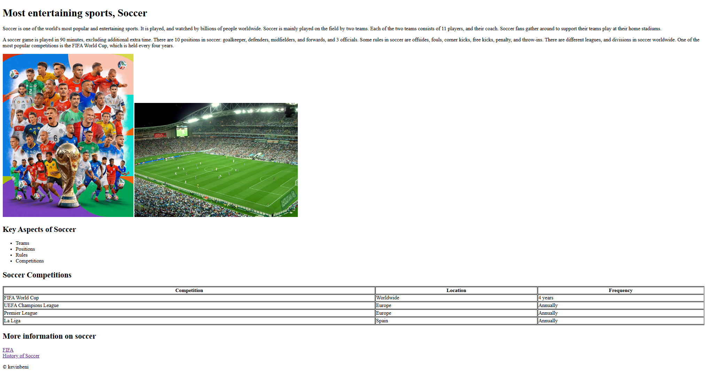
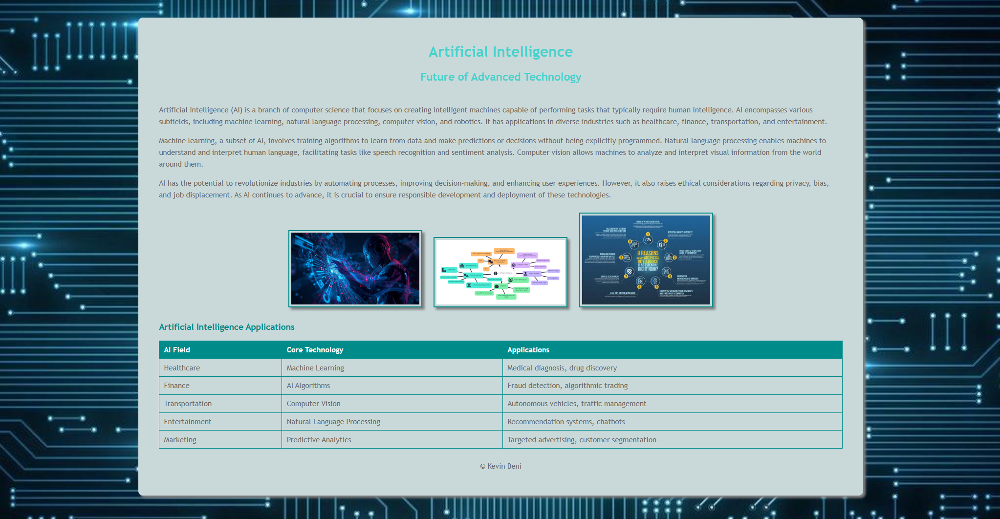
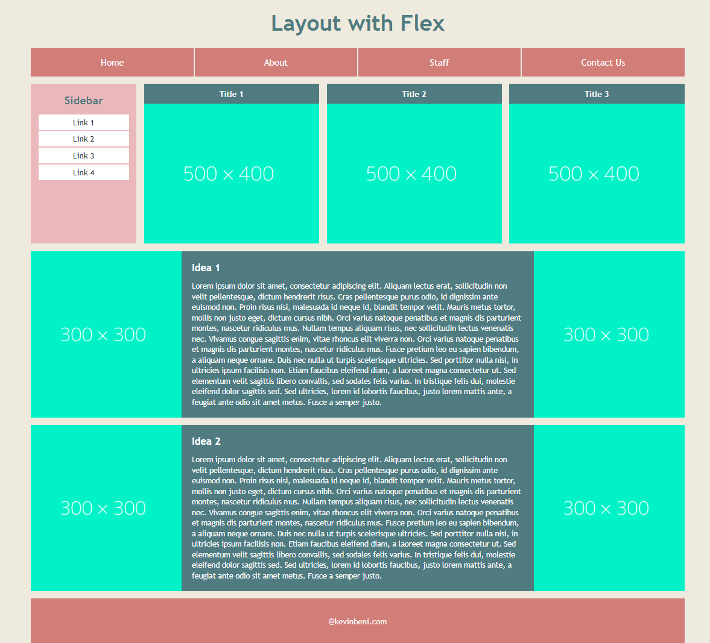
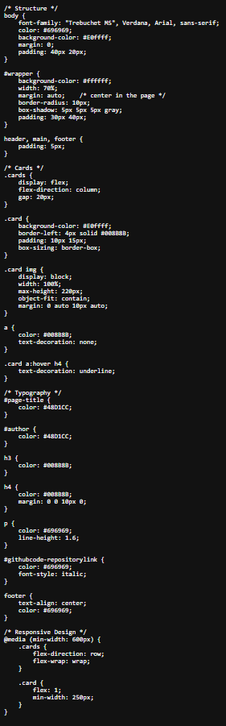
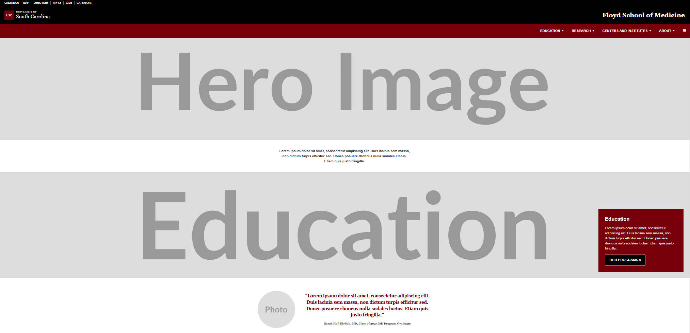
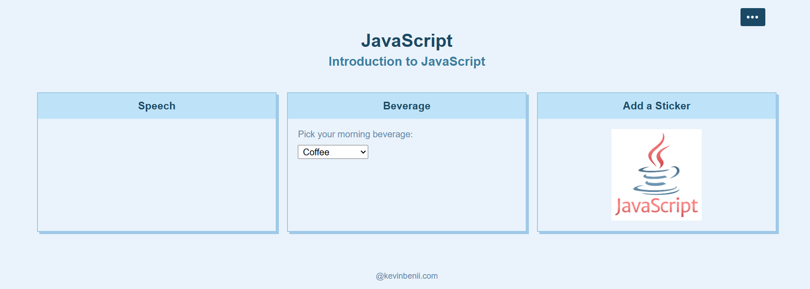

Assignment 1 - Basic HTML

An HTML page about soccer, one of the world's most popular and entertaining sports. It covers how a game is played, the 11 players and coach per team, the 11 field positions, and rules. The page also includes a table comparing major competitions such as the FIFA World Cup, UEFA Champions League, Premier League, and La Liga, along with website links to FIFA's official site and a video on the history of soccer.
Assignment 2 - Basic CSS

An HTML website paege that explores artificial intelligence as a branch of computer science focused on building machines that can perform daily human tasks. It categorized in subfields like machine learning, natural language processing, and computer vision, and includes a table mapping AI fields to their core technologies and real-world applications across healthcare, finance, transportation, entertainment, and marketing.
Assignment 3 - Page Layout

A single-page website page using the HTML5 elements, a list based navigation bar, Loren ipsum image and text content. The page layout is built with CSS flexbox and media quieres to display content in multi-column format.
Assignment 4 - Main Page CSS

HTML home page built with HTML5 elements, header, content, and a footer layot. It uses CSS Flexbox to arrange the assignment and project cards, and a media query, so the cards stack in a column on small screens and sit side by side on larger screens.
Assignment 5 - Recreate CSS Page

Using skills learned in class to recreate a given CSS design as closely as possible.
Assignment 7 - JavaScript Buttons, Functions, and More

A JavaScript page featuring three interactive cards: a clickable speech bubble that toggles a greeting, a beverage dropdown that displays a custom message on selection, and a sticker card where clicking adds or removes an emoji overlay on an image.